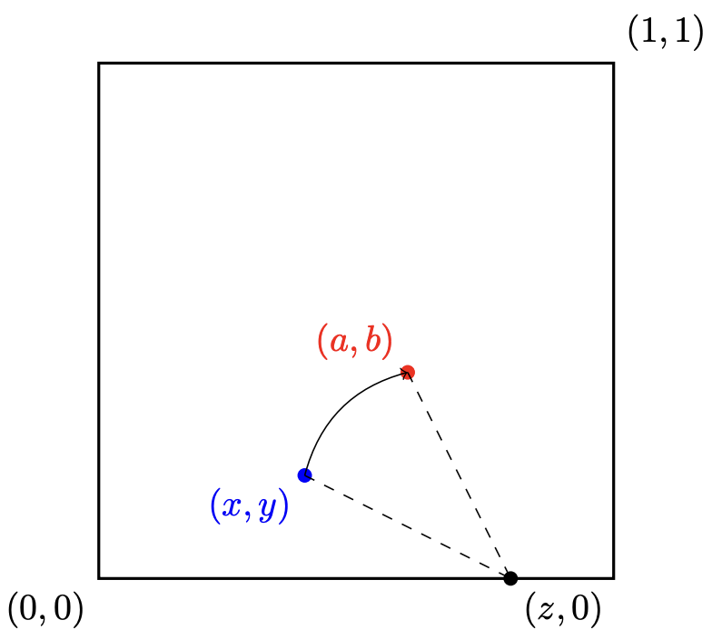
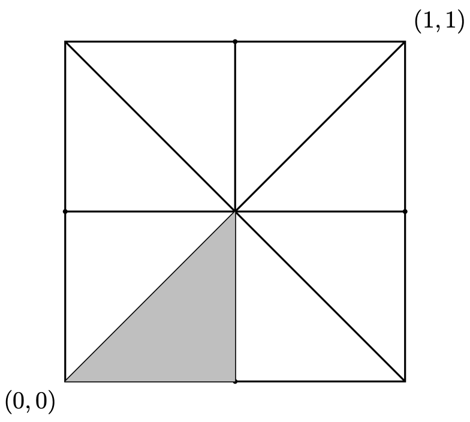
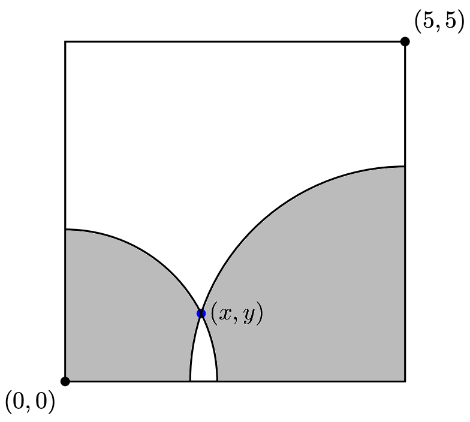

See the Puzzle Statement here. And the official outline of the solution from Jane Street is here. I have a more detailed explanation of the solution below.

Let us denote the blue and red points by $(x,y)$ and $(a,b)$, respectively. The required probability can be obtained by solving the following quadruple integral:
$$\int_0^1 \int_0^1 \int_0^1 \int_0^1 M(x, y, a, b) \, db \, da \, dy \, dx$$where $M(x,y,a,b)$ is an indicator function, defined as:
$$M(x, y, a, b) = \begin{cases} 1, & \text{if } \exists\, z \text{ s.t. } 0 \leq z \leq 1 \text{ and } \sqrt{(x-z)^2 + y^2} = \sqrt{(a-z)^2 + b^2} \\ 0, & \text{o/w} \end{cases}$$The above formulation is essentially a restatement of the problem in mathematical terms. It only assumes, without loss of generality, that the square is of size 1, with coordinates $(0,0)$ and $(1,1)$ on the diagonally opposite corners.

The outer two integrals can be slightly simplified using the rotational and reflection symmetry of the square:
$$8 \times \int_0^{1/2} \int_0^{x} \int_0^1 \int_0^1 M(x, y, a, b) \, db \, da \, dy \, dx$$Keep in mind that we only require the solution up to ten decimal places. Although a numerical approach can be used, we need to solve the inner integrals analytically to ensure the solution can be approximated within a reasonable amount of time. Therefore, we will first derive an analytical expression for the conditional probability for a given blue point $(x,y)$. Once this is done, we can apply a numerical technique to compute the required probability by integrating over $x$ and $y$.
Let us first calculate the conditional probability corresponding to a given $(x,y,a)$, i.e. we know the X-coordinate $a$ of the red point, in addition to the blue point $(x,y)$. A point $(a,b)$ satisfies the given property of the red point if and only if:
$$\exists\, z \text{ s.t. } 0 \leq z \leq 1 \text{ and } b^2 = (x^2 - a^2 + y^2) - 2z(x - a)$$Since the red point must lie within the square, we also have: $0 \leq b \leq 1$. But note from the above condition that $b$ is only real when:
$$z \leq \frac{x + a}{2} + \frac{y^2}{2(x - a)}$$So, there need not always be a possible red point corresponding to every $z \in [0,1]$. But because $b$ is a continuous function $z$, given $(x,y,a)$, these points form a contiguous interval where they do exist, and the length of this interval represents the conditional probability given $(x,y,a)$. Furthermore:
$$\frac{db}{dz} = \frac{2(a - x)}{b}$$Thus, $b$ is monotonically decreasing with respect to $z$ when $a \leq x$, and monotonically increasing when $a > x$. By evaluating $b$ at the extremes (i.e., $z=0$ and $z=1$), we observe that the upper bounds of $b$ never reach 1 under the conditions $0 \leq x \leq 0.5$, $0 \leq y \leq x$, and $0 \leq a \leq 1$. Thus, the upper bound of the interval of $b$ given $(x,y,a)$ will be:
$$U(x, y, a) = \begin{cases} \sqrt{x^2 - a^2 + y^2}, & \text{if } a \leq x \\[6pt] \sqrt{(1-x)^2 - (1-a)^2 + y^2}, & \text{o/w} \end{cases}$$Unlike the upper bound of $b$, its lower bound may be 0 for some values of $(x,y,a)$. Consider the case when $0 \leq a \leq x$. As $b$ decreases with $z$, it is possible that the lower bound is given when $z=1$, as:
$$\sqrt{(1-x)^2 - (1-a)^2 + y^2}$$However, the above is a real number only when:
$$a < \left[1 - \sqrt{(1-x)^2 + y^2}\right]$$Thus, we have that:
$$L(x, y, a) = \begin{cases} 0, & \text{if } 0 \leq a \leq \left[1 - \sqrt{(1-x)^2 + y^2}\right] \\[6pt] \sqrt{(1-x)^2 - (1-a)^2 + y^2}, & \text{if } \left[1 - \sqrt{(1-x)^2 + y^2}\right] < a \leq x \end{cases}$$Applying a similar logic for when $x < a \leq 1$, we have:
$$L(x, y, a) = \begin{cases} 0, & \text{if } 0 \leq a \leq \left[1 - \sqrt{(1-x)^2 + y^2}\right] \\[6pt] \sqrt{(1-x)^2 - (1-a)^2 + y^2}, & \text{if } \left[1 - \sqrt{(1-x)^2 + y^2}\right] < a \leq x \\[6pt] \sqrt{x^2 - a^2 + y^2}, & \text{if } x < a \leq \sqrt{x^2 + y^2} \\[6pt] 0, & \text{o/w (i.e. } \sqrt{x^2 + y^2} < a \leq 1) \end{cases}$$
Thus, the required conditional probability for a given blue point $(x,y)$ can be given by the sum of a bunch of double integrals, which can be analytically solved as:
$$(x^2 + y^2) \times \left[\arcsin\!\left(\frac{x}{\sqrt{x^2 + y^2}}\right) - \frac{\pi}{4}\right] + \left((1-x)^2 + y^2\right) \times \left[\arcsin\!\left(\frac{1-x}{\sqrt{(1-x)^2 + y^2}}\right) - \frac{\pi}{4}\right] + y$$Integrating this numerically over $0 \leq x \leq 0.5$, $0 \leq y \leq x$, which forms one-eighth of the area of the square, we get $0.06142594735478852$. And scaling it by 8, we get the probability we want as: $0.49140757883830816$.